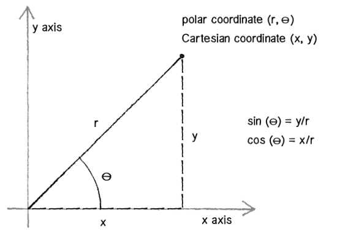
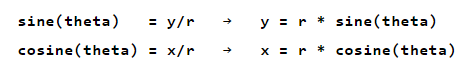

Whenever we rotate in JavaScript, we ALWAYS rotate around the origin (upper left corner by default). However this is most often not what we want. The good news is we can use translate to move the origin to any location and rotate around that location. In order to do this, we need to save the current coordinate system and then restore it after we are done.
save()
translate(this.loc.x, this.loc.y);
rotate(someAngle);
restore()
From Shiffman:
location = location + velocity
velocity = velocity + acceleration
angle = angle + angular velocity
angular velocity = angular velocity + angular acceleration
Most often, math functions will take radian measure instead of degree measure